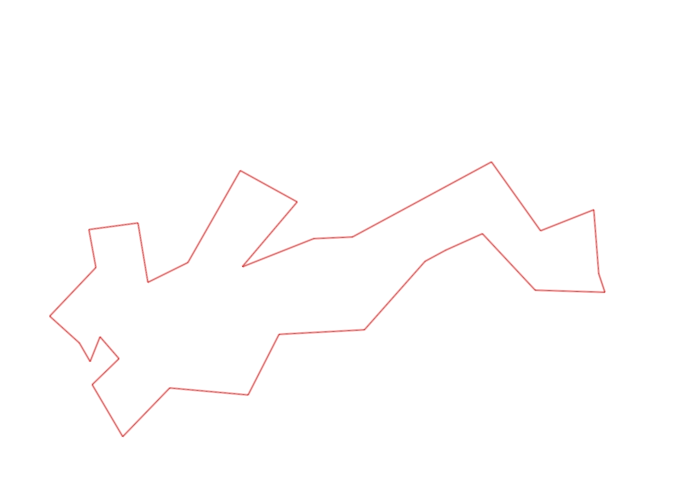
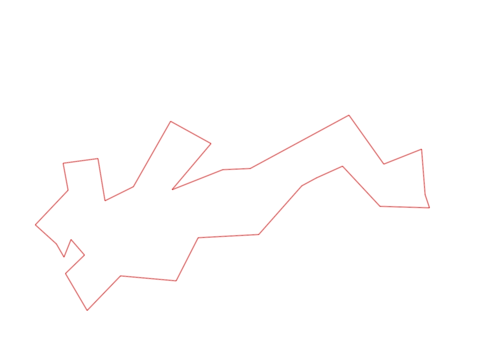

| Control |
Points |
Time Punched |
Distance |
Your Time |
Pace |
Place |
Fastest Time |
Median Time |
% Behind Fastest |
| 57 |
50 |
|
0.26 |
0:02:11 |
08:23 |
1 / 2 |
0:02:11 |
0:09:30 |
0% |
| 107 |
100 |
|
0.2 |
0:03:05 |
15:25 |
15 / 21 |
0:00:00 |
0:02:52 |
-% |
| 126 |
20 |
|
0.32 |
0:02:47 |
08:41 |
2 / 2 |
0:02:26 |
0:02:36 |
14% |
| 130 |
30 |
|
0.14 |
0:00:37 |
04:24 |
12 / 19 |
0:00:00 |
0:00:33 |
-% |
| 63 |
60 |
|
0.18 |
0:01:20 |
07:24 |
4 / 5 |
0:01:13 |
0:01:18 |
9% |
| 32 |
30 |
|
0.15 |
0:00:48 |
05:20 |
7 / 27 |
0:00:36 |
0:00:56 |
33% |
| 44 |
40 |
|
0.12 |
0:01:04 |
08:53 |
5 / 29 |
0:00:52 |
0:01:49 |
23% |
| 53 |
50 |
|
0.2 |
0:01:50 |
09:10 |
9 / 26 |
0:01:31 |
0:02:15 |
20% |
| 69 |
60 |
|
0.12 |
0:01:03 |
08:45 |
7 / 29 |
0:00:45 |
0:01:18 |
40% |
| 71 |
70 |
|
0.06 |
0:01:13 |
20:16 |
13 / 25 |
0:00:48 |
0:01:13 |
52% |
| 54 |
50 |
|
0.08 |
0:00:51 |
10:37 |
20 / 33 |
0:00:27 |
0:00:45 |
88% |
| 41 |
40 |
|
0.09 |
0:01:25 |
15:44 |
4 / 13 |
0:01:01 |
0:01:43 |
39% |
| 40 |
40 |
|
0.11 |
0:00:54 |
08:10 |
8 / 24 |
0:00:45 |
0:01:00 |
20% |
| 77 |
70 |
|
0.18 |
0:01:58 |
10:55 |
6 / 21 |
0:01:35 |
0:02:21 |
24% |
| 59 |
50 |
|
0.21 |
0:02:49 |
13:24 |
10 / 18 |
0:02:00 |
0:02:47 |
40% |
| 61 |
60 |
|
0.24 |
0:03:04 |
12:46 |
6 / 19 |
0:02:14 |
0:03:16 |
37% |
| 42 |
40 |
|
0.21 |
0:03:16 |
15:33 |
6 / 14 |
0:02:19 |
0:03:34 |
41% |
| 37 |
30 |
|
0.26 |
0:04:44 |
18:12 |
7 / 9 |
0:02:45 |
0:03:57 |
72% |
| 48 |
40 |
|
0.28 |
0:04:43 |
16:50 |
3 / 5 |
0:04:03 |
0:04:43 |
16% |
| 64 |
60 |
|
0.07 |
0:00:56 |
13:19 |
5 / 14 |
0:00:38 |
0:01:05 |
47% |
| 49 |
40 |
|
0.12 |
0:01:23 |
11:31 |
6 / 12 |
0:00:55 |
0:01:28 |
50% |
| 46 |
40 |
|
0.23 |
0:03:01 |
13:06 |
6 / 8 |
0:02:06 |
0:02:39 |
43% |
| 75 |
70 |
|
0.21 |
0:03:15 |
15:28 |
5 / 7 |
0:02:06 |
0:02:33 |
54% |
| 56 |
50 |
|
0.06 |
0:00:37 |
10:16 |
4 / 8 |
0:00:25 |
0:00:39 |
48% |
| 81 |
80 |
|
0.19 |
0:01:14 |
06:29 |
3 / 7 |
0:00:54 |
0:01:17 |
37% |
| 52 |
50 |
|
0.17 |
0:01:27 |
08:31 |
4 / 6 |
0:01:09 |
0:01:25 |
26% |
| 109 |
100 |
|
0.26 |
0:01:40 |
06:24 |
3 / 9 |
0:01:20 |
0:02:00 |
25% |
| 47 |
40 |
|
0.48 |
0:03:49 |
07:57 |
1 / 1 |
0:03:49 |
0:03:49 |
0% |
| 92 |
90 |
|
0.12 |
0:02:17 |
19:01 |
3 / 10 |
0:01:21 |
0:03:13 |
69% |
| Finish |
0 |
|
0.23 |
0:01:41 |
07:19 |
1 / 6 |
0:01:41 |
0:05:45 |
0% |
Total Distance Covered: 5.55km
Points Scored: 1550
Late Penalty: -40
Final Score: 1510
Total Time: 1hours 1minutes 2seconds
Efficiency: 272.07 points/km
 
